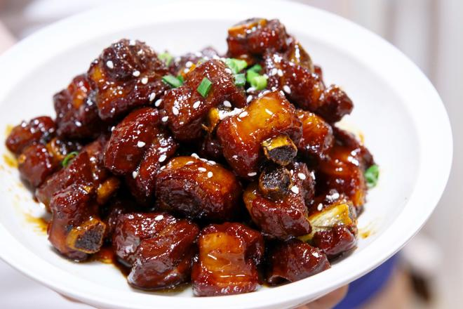

Sweet and Sour Spareribes

Description
Sweet and sour spareribs is a classic Chinese dish known for its delightful balance of flavors. The tender spareribs are coated in a tangy and sweet sauce, making it a favorite among many.
Ingredients
- Pork Ribs
- Rock Sugar ~15-20g
- Cooking Wine
- Light Soy Sauce
- White Vinegar
- Dark Soy Sauce
- Star Anise
- Bay Leaves
- Scallion ~1 knot
- Ginger ~3 slices
Back Link
home page